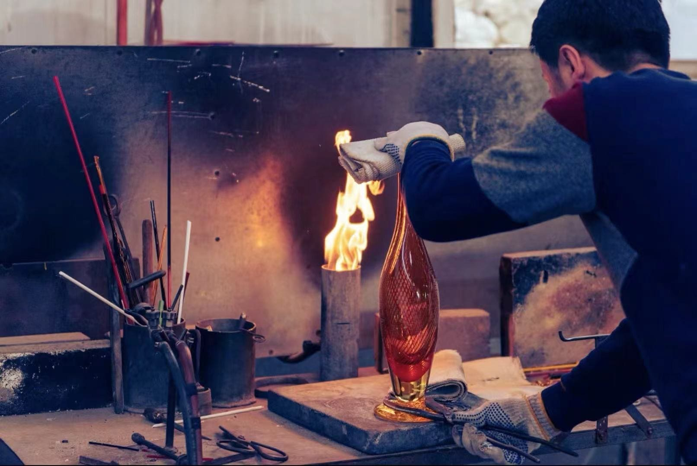

琉璃幻彩，匠心独韵
|  |
直播介绍琉璃幻彩，匠心独韵 —— 直播见证火与美的传奇邂逅 琉璃，那是火焰与时光交织的梦幻结晶，是千年传承的艺术瑰宝。它以绚丽多彩的色泽、精妙绝伦的造型，诉说着历史的故事，承载着匠人的心血。 邀您共赴一场琉璃工艺品制作的奇幻之旅，一同领略火中涅槃的艺术魅力！ 无论您是艺术收藏的发烧友，还是对传统手工艺充满敬意与热爱的文化探索者，亦或是追求高品质生活美学的时尚达人，这场琉璃工艺品制作直播都将为您开启一扇通往神秘而绚烂的琉璃艺术殿堂的大门，带您领略一场无与伦比的视觉盛宴与心灵震撼。 |